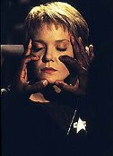
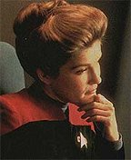
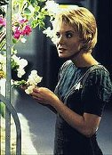
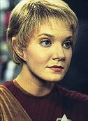
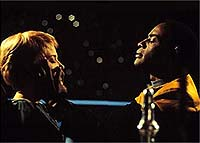

|
MANCHETE
DO EPISDIO
Enredo fora a barra para manter a
premissa da srie e traz reforo para Kes
Episdio
anterior | Prximo
episdio
Sinopse:
Data Estelar: 49164.8.
 Enquanto trabalham
na Enfermaria, Kes e o Doutor percebem mudanas nos restos mortais
do Guardio, a entidade aliengena responsvel pelo
aprisionamento da Voyager no quadrante Delta. Os restos aparentam
estar ressonando em resposta a uma fonte de energia exterior, uma
outra forma de vida. Janeway cogita a possibilidade de a companheira
do Guardio (citada no piloto da srie) estar na regio e de como
encontr-la poderia significar a passagem sem escalas para o espao
da Federao.
Como precauo, no entanto, Tuvok desenvolve uma toxina capaz de
debilit-la, no caso de ameaa. Seguindo uma trilha de energia, a
tripulao chega a uma estao de 300 anos habitada por Ocampas,
a raa de Kes. Tanis, o lder desses Ocampas abre fogo contra a
Voyager e diz que a nave no bem-vinda.
 Kes concorda em ser
a mediadora entre a tripulao e seu povo e, quando Tanis vem a
bordo, ela o assegura que a Voyager vem em paz. Em encontro
particular, Tanis diz a Kes que Suspiria, a "Guardio" fmea,
est nas proximidades. Ela vem cuidando desse grupo de Ocampas h
300 anos, ensinando-lhes a desenvolver suas habilidades mentais. Ele
mostra a Kes um pouco dessas habilidades ao manipular o crescimento
das plantas no hangar de hidropnicas. Mais tarde, Tanis contacta
Suspiria, que diz no se importar com o potencial de Kes, apenas
quer a nave.
Enquanto Tanis guia a Voyager para o ponto de encontro com Suspiria,
tambm tutela Kes em suas habilidades telepticas. Entretanto, as
lies praticamente acabam em desastre, quando ela tenta ferver gua
com a fora do pensamento e quase mata Tuvok no processo.
Felizmente, o tenente se recupera. Kes ento percebe que seus
poderes, ainda sem disciplina, podem causar mais mal do que bem.
 Tanis insiste que
Kes deixe a Voyager e v viver com os outros Ocampas na estao,
sob a proteo de sua "Guardi". Suspiria vem a bordo e
diz a Janeway que destruir a nave em retaliao participao
da tripulao na morte de seu companheiro. Mas Kes descobre as
verdadeiras intenes em questo e usa seus novos dons para
incapacitar Tanis e, consequentemente, Suspiria. Janeway ento
dispara a toxina e Tuvok ativa um campo de fora. Para provar sua
boa f, a capit liberta a entidade e diz que no deseja ferir
ningum; quer apenas voltar para casa. Suspiria deixa a Voyager,
levando consigo Tanis, e Kes permanece com seus amigos.
Comentrios:
Basta dizer que "Cold
Fire" um dos vrios episdios em que a capit
desperdia uma boa chance de voltar para casa em uma frao de
segundos. A justificativa para isso, como sempre, deve ser a
necessidade de manter a nave perdida a 75 anos de casa.
 Na iminncia de
finalmente encontrar a entidade sobre a qual o Guardio falou no
piloto, a tripulao nem ao menos ficou entusiasmada. Todo o
roteiro foi centrado em Kes, o que por um lado foi bom pois
desenvolveu bem a personagem. Porm, esqueceu-se a prpria
premissa do seriado. Os outros personagens foram pouco utilizados e
a participao de alguns foi de certo modo decepcionante.
O grande exemplo dessa vez foi a capit. Ao incapacitar Suspiria e
mant-la atrs de um campo de fora, Janeway poderia muito bem
estabelecer um dilogo com ela, provando atravs do banco de dados
da nave que a Voyager no teve participao na morte do Guardio.
Pelo contrrio, apenas concedeu seu pedido de destruir a estao
para proteger os Ocampas da ameaa Kazon e que esse ato de compaixo
privou sua tripulao de voltar para o quadrante Alfa. Ser que
se essa conversa tivesse ocorrido, ela ainda estaria guiando a nave
pelo quandrante Delta?
 Isso no
aconteceu, contudo o que impediu a Voyager de voltar estao de
Tanis e tentar novo contato? Janeway optou por continuar no curso
original, deixando o ocorrido para trs. Novamente, a explicao
est em manter a premissa.
Ao se observar o lado positivo da histria, a figura de destaque
mesmo Kes. Antes de "Cold Fire", o nico roteiro a
ela dedicado foi "Elogium",
que no havia acrescentado nada personagem. Aqui, pela primeira
vez suas habilidades so verdadeiramente estimuladas. A atuao
de Jennifer Lien foi muito boa e mostrou todo o potencial da atriz e
seu papel.
Citaes:
Tanis - "Where Voyager
appears, people fear destruction."
("Por onde a Voyager passa, pessoas temem a destruio.")
Kes - "The oldest Ocampa only lived to be nine."
("O Ocampa mais velho s viveu at os nove anos.")
Neelix - "May I say something now?"
("Posso falar agora?")
Doutor - "Vulcans make the worst patients."
("Os Vulcanos so os piores pacientes.")
Trivia:
 Gary Graham, que interpreta Tanis em "Cold Fire", j
veterano em fico cientfica. O ator esteve no elenco fixo de
"Alien Nation".
Gary Graham, que interpreta Tanis em "Cold Fire", j
veterano em fico cientfica. O ator esteve no elenco fixo de
"Alien Nation".
Alm de episdios de Voyager, o diretor
Cliff Bole tambm dirigiu episdios das sries "O Homem de
Seis Milhes de Dlares", "O Homem-Aranha",
"Carro Comando", "V", "MacGiver", A
Nova Gerao, Deep Space Nine, "Baywatch",
"Arquivo-X" e "Millennium".
Ficha
tcnica:
Escrito por Anthony Williams
Direo de Cliff Bole
Exibido em 13/11/1995
Produo: 026
Elenco:
Kate Mulgrew como
Kathryn Janeway
Robert Beltran como Chakotay
Roxann Biggs-Dawson como B'Elanna Torres
Robert Duncan McNeill como Tom Paris
Jennifer Lien como Kes
Ethan Phillips como Neelix
Robert Picardo como Doutor
Tim Russ como Tuvok
Garrett Wang como Harry Kim
Elenco convidado:
Gary Graham como Tanis
Lindsay Ridgeway como Suspiria
Norman Large como Ocampa
Episdio
anterior | Prximo
episdio
|